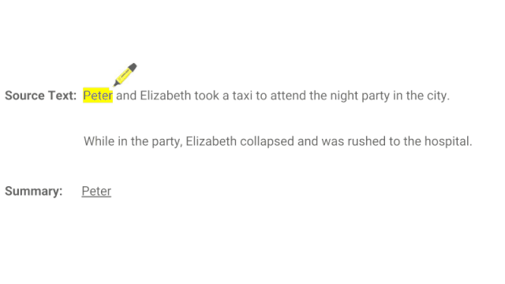
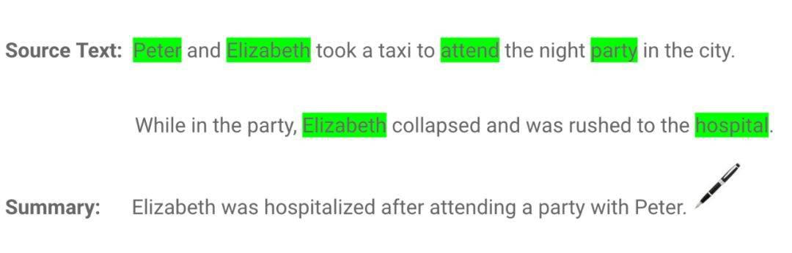
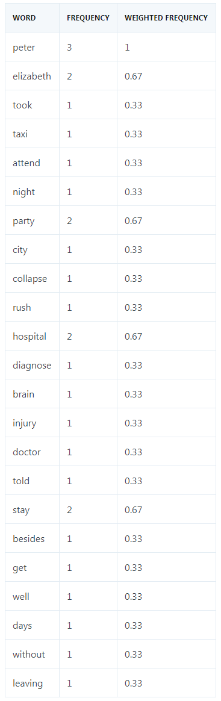
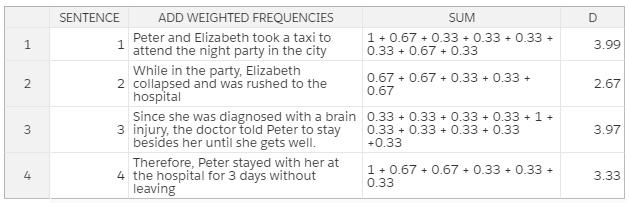
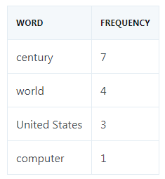
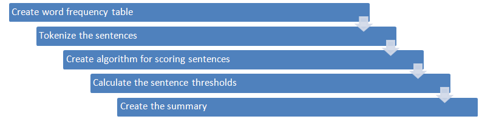
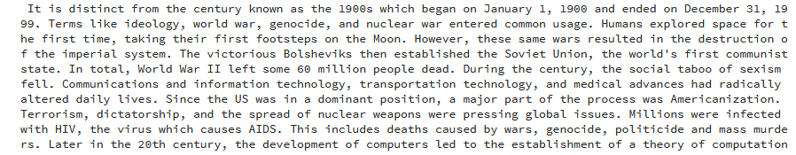
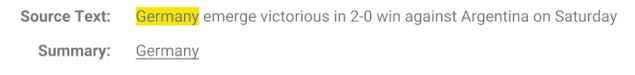

基于词频计算句子权重的文本自动摘要
我们在阅读新闻报道等实时性文章时，需要快速归纳出文章的大意。但是，如果将一篇很长的文章归纳成一个能够涵盖原文中心思想的小段落，则需要我们耗费大量时间。本文介绍了自然语言处理中的两种文本自动摘要生成方法——抽取式和抽象式文本摘要。这两种方法通过计算文本中句子成分的权重来生成摘要，可以大大节省通读全文以及归纳总结主要信息的时间，为读者提供方便。
文本摘要方法能够对冗长文本进行简洁准确的总结，同时将重点放在传达有用信息的章节，而又不失去文章大意。
文本自动摘要旨在将冗长文档变成缩写版本，若手动完成则可能非常麻烦且成本高昂。
在生成需要的摘要文本之前，机器学习算法可被训练用以理解文档，识别传达重要事实和信息的章节。
使用文本摘要机器学习算法生成一篇在线新闻文章的摘要。
文本自动摘要的必要性
随着目前数字空间中数据的爆炸式增长，而大多又是非结构化的文本数据，因而需要开发文本自动摘要工具，使人们可以轻易获知文本大意。当前，我们可以快速访问大量信息。但是，大多数信息冗长、无关紧要，还可能无法传达其本意。例如，如果你想从一篇在线新闻报道中搜寻一些特定信息，你也许要吃透报道内容，花费大量时间剔除无用信息，之后才能找到自己想要了解的信息。所以，使用能够提取有用信息并剔除无关紧要和无用数据的自动文本摘要生成器变得非常重要。文本摘要的实现可以增强文档的可读性，减少搜寻信息的时间，获得更多适用于特定领域的信息。
文本自动摘要的主要类型
从广义的角度看，自然语言处理（NLP）中有两种文本摘要生成方法：抽取式和抽象式。
抽取式摘要（extraction-based summarization）
在抽取式摘要中，抽取一段文本中表示重点内容的单词子集，并结合起来生成摘要。我们可以将抽取式摘要看作是一支荧光笔-从源文本中抽取主要信息。
荧光笔 = 抽取式摘要
在机器学习中，抽取式摘要通常需要衡量基本句子成分的权重，并根据权重结果生成摘要。
不同类型的算法和方法均可用于衡量句子的权重，之后根据各成分之间的关联性和相似性进行排序-并进一步将这些成分连接起来以生成摘要。
如下例所示：

抽取式摘要
如上例所示，抽取式摘要由荧光笔标黄的单词组成，生成摘要的语法可能不准确。
抽象式摘要
在抽象式摘要中，高级深度学习方法（advanced deep learning technique）用于解释和缩写原始文档，就像人类所做的一样。将抽象式摘要想象成一支钢笔-它能生成或许不属于源文档的新句子。
钢笔 = 抽象式摘要
由于抽象式机器学习算法能够生成表示源文本中最重要信息的新短语和句子，所以这些抽象式算法有助于克服抽取式摘要中的语法不准确问题。
如下例所示：

抽象式摘要。
尽管抽象式文本摘要的表现更好，但开发相关算法需要复杂的深度学习技巧和语言模型。
为了获得合理产出，抽象式摘要方法必须能够解决诸多自然语言处理问题，如自然语言生成、语义表征和推理排序（inference permutation）。
同样地，抽取式文本摘要方法依然大受欢迎。在本文中，我们将重点介绍抽象式文本摘要方法。
如何执行文本摘要
我们使用以下一段话展示如何执行文本摘要抽取：
我们依照以下步骤对这段话作总结，同时尽可能保留原意。
第一步： 将这段话转换成句子
首先，我们将这段话分割成相应的句子。转换成句子的最佳方法是在句点（period）出现时提取一个句子。
第二步： 文本处理
接下来，我们在文本处理中移除停止词（那些没有实际意义的常见词，如「and」和「the」）、数字、标点符号以及句子中的其他特殊字符。
句子成分的过滤有助于移除冗余和不重要的信息，这些信息对文本意图的表达或许没有任何价值。
以下是文本处理结果：
第三步： 分词
切分各个句子，列出句子中的所有单词。
以下是单词列表：
| ['peter','elizabeth','took','taxi','attend','night','party','city','party','elizabeth','collapse','rush','hospital', 'diagnose','brain', 'injury', 'doctor','told','peter','stay','besides','get','well','peter', 'stayed','hospital','days','without','leaving']
|
第四步：评估单词的加权出现频率（occurrence frequency）
紧接着，我们计算所有单词的加权出现频率。为此，我们用每个单词的出现频率除以这段话中出现最多次的单词的频率，在这段话中出现最多的是 Peter，总共出现了三次。
下表给出了每个单词的加权出现频率。

第五步：用相应的加权频率替代原句中的各个单词，然后计算总和。
我们在文本处理步骤中已经移除了停止词和特殊字符等无关紧要的单词，因而它们的加权频率为零，也就没有必要在计算时加上。

根据所有单词的加权频率总和，我们可以推导出：第一个句子在整段话中的权重最大。所以，第一个句子能够对这段话的意思作出最具代表性的总结。
此外，如果第一个句子与第三个句子（该句的权重在整段话中排第二）相结合，则可以作出更好的总结。
以上例子只是基本说明了如何在机器学习中执行抽取式文本摘要。现在，我们看看如何在创建实际摘要生成器中运用上述概念。
维基百科文章的文本摘要
让我们动手创建一个可以简化冗长 web 文章中信息的文本摘要生成器。为简单起见，除了 Python 的 NLTK toolkit，我们不使用任何其他机器学习库（machine learning library）。
以下是摘要生成器的代码 blueprint：
1
2
3
4
5
6
7
8
9
10
11
12
13
14
15
16 | # Creating a dictionary for the word frequency table
frequency_table = _create_dictionary_table(article)
# Tokenizing the sentences
sentences = sent_tokenize(article)
# Algorithm for scoring a sentence by its words
sentence_scores = _calculate_sentence_scores(sentences, frequency_table)
# Getting the threshold
threshold = _calculate_average_score(sentence_scores)
# Producing the summary
article_summary = _get_article_summary(sentences, sentence_scores, 1.5 * threshold)
print(article_summary)
|
依照下列步骤使用 Python 语言创建一个简单的文本摘要生成器。
第一步：准备数据
在这个例子中，我们想总结一下这篇 Wikipedia 文章的信息，这篇文章只是对 20 世纪发生的主要事件进行概述。
为了获取这篇文章的文本，我们将使用 Beautiful Soup 库。
以下是抓取文章内容的代码：
1
2
3
4
5
6
7
8
9
10
11
12
13
14
15
16
17
18
19 | import bs4 as BeautifulSoup
import urllib.request
# Fetching the content from the URL
fetched_data = urllib.request.urlopen('https://en.wikipedia.org/wiki/20th_century')
article_read = fetched_data.read()
# Parsing the URL content and storing in a variable
article_parsed = BeautifulSoup.BeautifulSoup(article_read,'html.parser')
# Returning <p> tags
paragraphs = article_parsed.find_all('p')
article_content = ''
# Looping through the paragraphs and adding them to the variable
for p in paragraphs:
article_content += p.text
|
在以上代码中，我们首先导入抓取网页数据所必需的库。BeautifulSoup 库用于解析网页内容，而 urllib library 用于连接网页和检索 HTML。
BeautifulSoup 将输入文本转化为 Unicode 字符，将输出文本转化为 UTF-8 字符，省去了从 web 上抓取文本时处理不同字符集编码的麻烦。
我们使用 urllib.request 程序中的 urlopen 函数打开网页。之后，使用 read 函数读取所抓取的数据对象。为了解析数据，我们调用 BeautifulSoup 对象，并向它传递两个参数，即 article_read 和 html.parser。
find_all 函数用于传回 HTML 中出现的所有<p>元素。此外，.text 使我们只能选择<p>元素中的文本。
第二步：处理数据
为尽可能确保废弃的文本数据无噪声，我们将执行一些基本的文本清理（text cleaning）。为协助完成这一处理过程，我们将从 NLTK 库中导入一个停止词列表。
我们还将引入 PorterStemmer，这是一种将单词还原成词根形式的算法。例如，单词 cleaning、cleaned 和 cleaner 都可以还原成词根 clean。
此外，我们还将创建一个包含文本中每一单词出现频率的字典表。我们将依次读取文本及相应单词，以消除所有停止词。
之后，我们将检查单词是否出现在 frequency_table 中。如果一个单词之前就在字典中，则其值更新 1。否则，如果一个单词首次被识别到，则其值设置为 1。
例如，频率表应如下所示：

代码如下：
1
2
3
4
5
6
7
8
9
10
11
12
13
14
15
16
17
18
19
20
21
22
23
24 | from nltk.corpus import stopwords
from nltk.stem import PorterStemmer
def _create_dictionary_table(text_string) -> dict:
# Removing stop words
stop_words = set(stopwords.words("english"))
words = word_tokenize(text_string)
# Reducing words to their root form
stem = PorterStemmer()
# Creating dictionary for the word frequency table
frequency_table = dict()
for wd in words:
wd = stem.stem(wd)
if wd in stop_words:
continue
if wd in frequency_table:
frequency_table[wd] += 1
else:
frequency_table[wd] = 1
return frequency_table
|
第三步：将文章分割成句子
为了将 article_content 分割成一个句子集，我们将使用 NLTK 库中的内置方法。
| from nltk.tokenize import word_tokenize, sent_tokenize
sentences = sent_tokenize(article)
|
第四步：确定句子的加权频率
为了评估文本中每个句子的分数，我们将分析每个单词的出现频率。在这种情况下，我们将根据句子中的单词对该句进行评分，也就是加上句子中每个重要单词的出现频率。
请看以下代码：
1
2
3
4
5
6
7
8
9
10
11
12
13
14
15
16
17
18
19 | def _calculate_sentence_scores(sentences, frequency_table) -> dict:
# Algorithm for scoring a sentence by its words
sentence_weight = dict()
for sentence in sentences:
sentence_wordcount = (len(word_tokenize(sentence)))
sentence_wordcount_without_stop_words = 0
for word_weight in frequency_table:
if word_weight in sentence.lower():
sentence_wordcount_without_stop_words += 1
if sentence[:7] in sentence_weight:
sentence_weight[sentence[:7]] += frequency_table[word_weight]
else:
sentence_weight[sentence[:7]] = frequency_table[word_weight]
sentence_weight[sentence[:7]] = sentence_weight[sentence[:7] / sentence_wordcount_without_stop_words
return sentence_weight
|
重要的是，为了避免长句的分数必然高于短句，我们用每个句子的分数除以该句中的单词数。
另外，为了优化字典内存，我们任意添加 sentence[:7]，这指的是每个句子的前七个字符。但在较长的文档中，你很可能遇到具有相同首个 n_chars 的句子，这时最好使用哈希函数（hash function）或 index 函数（index function）来处理此类极端情况（edge-cases），避免冲突。
第五步：计算句子阈值
为了进一步调整适合摘要的句子类型，我们将创建句子的平均分。借助于这个阈值，我们可以避免选择分数低于平均分的句子。
代码如下：
| def _calculate_average_score(sentence_weight) -> int:
# Calculating the average score for the sentences
sum_values = 0
for entry in sentence_weight:
sum_values += sentence_weight[entry]
# Getting sentence average value from source text
average_score = (sum_values / len(sentence_weight))
return average_score
|
第六步：生成摘要
最后，我们拥有了所有必需的参数，因而现在可以生成文章摘要了。
代码如下：
| def _get_article_summary(sentences, sentence_weight, threshold):
sentence_counter = 0
article_summary = ''
for sentence in sentences:
if sentence[:7] in sentence_weight and sentence_weight[sentence[:7]] >= (threshold):
article_summary += " " + sentence
sentence_counter += 1
return article_summary
|
总结
下图展示了创建文本摘要算法的工作流程。

以下是机器学习中简单抽取式文本摘要生成器的完整代码：
1
2
3
4
5
6
7
8
9
10
11
12
13
14
15
16
17
18
19
20
21
22
23
24
25
26
27
28
29
30
31
32
33
34
35
36
37
38
39
40
41
42
43
44
45
46
47
48
49
50
51
52
53
54
55
56
57
58
59
60
61
62
63
64
65
66
67
68
69
70
71
72
73
74
75
76
77
78
79
80
81
82
83
84
85
86
87
88
89
90
91
92
93
94
95
96
97
98
99
100
101
102
103
104
105
106
107
108
109
110
111
112
113
114
115
116 | #importing libraries
from nltk.corpus import stopwords
from nltk.stem import PorterStemmer
from nltk.tokenize import word_tokenize, sent_tokenize
import bs4 as BeautifulSoup
import urllib.request
#fetching the content from the URL
fetched_data = urllib.request.urlopen('https://en.wikipedia.org/wiki/20th_century')
article_read = fetched_data.read()
#parsing the URL content and storing in a variable
article_parsed = BeautifulSoup.BeautifulSoup(article_read,'html.parser')
#returning <p> tags
paragraphs = article_parsed.find_all('p')
article_content = ''
#looping through the paragraphs and adding them to the variable
for p in paragraphs:
article_content += p.text
def _create_dictionary_table(text_string) -> dict:
#removing stop words
stop_words = set(stopwords.words("english"))
words = word_tokenize(text_string)
#reducing words to their root form
stem = PorterStemmer()
#creating dictionary for the word frequency table
frequency_table = dict()
for wd in words:
wd = stem.stem(wd)
if wd in stop_words:
continue
if wd in frequency_table:
frequency_table[wd] += 1
else:
frequency_table[wd] = 1
return frequency_table
def _calculate_sentence_scores(sentences, frequency_table) -> dict:
#algorithm for scoring a sentence by its words
sentence_weight = dict()
for sentence in sentences:
sentence_wordcount = (len(word_tokenize(sentence)))
sentence_wordcount_without_stop_words = 0
for word_weight in frequency_table:
if word_weight in sentence.lower():
sentence_wordcount_without_stop_words += 1
if sentence[:7] in sentence_weight:
sentence_weight[sentence[:7]] += frequency_table[word_weight]
else:
sentence_weight[sentence[:7]] = frequency_table[word_weight]
sentence_weight[sentence[:7]] = sentence_weight[sentence[:7]] / sentence_wordcount_without_stop_words
return sentence_weight
def _calculate_average_score(sentence_weight) -> int:
#calculating the average score for the sentences
sum_values = 0
for entry in sentence_weight:
sum_values += sentence_weight[entry]
#getting sentence average value from source text
average_score = (sum_values / len(sentence_weight))
return average_score
def _get_article_summary(sentences, sentence_weight, threshold):
sentence_counter = 0
article_summary = ''
for sentence in sentences:
if sentence[:7] in sentence_weight and sentence_weight[sentence[:7]] >= (threshold):
article_summary += " " + sentence
sentence_counter += 1
return article_summary
def _run_article_summary(article):
#creating a dictionary for the word frequency table
frequency_table = _create_dictionary_table(article)
#tokenizing the sentences
sentences = sent_tokenize(article)
#algorithm for scoring a sentence by its words
sentence_scores = _calculate_sentence_scores(sentences, frequency_table)
#getting the threshold
threshold = _calculate_average_score(sentence_scores)
#producing the summary
article_summary = _get_article_summary(sentences, sentence_scores, 1.5 * threshold)
return article_summary
if __name__ == '__main__':
summary_results = _run_article_summary(article_content)
print(summary_results)
|
在 FloydHub Notebook 上运行代码
在这个例子中，我们所采用的阈值是平均分的 1.5 倍。这个超参数值 hyperparameter在几次试验后为我们生成了良好的结果。当然，你可以根据自身的偏好对数值进行微调，并改进摘要生成效果。
下图是 Wikipedia 文章的生成摘要。

使用文本摘要算法生成的 Wikipedia 文章摘要。
如你所见，运行代码可以对冗长的 Wikipedia 文章进行总结，并简要概述 20 世纪发生的主要事件。
尽管如此，我们还可以改进摘要生成器，使之更好地生成长篇幅文本的简洁、精确摘要。
更多内容
当然，本文只是简要介绍了机器学习中使用文本摘要算法所能实现的功能。
若想了解更多有关该主题，特别是抽象式文本摘要的知识，下面一些有用的资源可以为你提供帮助：
有没有可能将两种方法（抽象式和抽取式文本自动摘要）相结合？这是指针生成网络pointer generator network的主要原理，该网络通过结合抽取（指向）和抽象（生成）取得了最佳效果。

图源："Taming Recurrent Neural Networks for Better Summarization"
《WikiHow: A Large Scale Text Summarization Dataset》一文提出了一个新的大规模文本自动摘要数据集 WikiHow，该数据集包含提取自 WikiHow 在线知识库的 230000 多篇文章。目前可用的大多数数据集的规模不足以训练序列到序列模型，它们也许只能提供有限的摘要，并且更适合执行抽取式摘要。但是，WikiHow 数据集规模大，质量高，能够在抽象式文本摘要中获得最优结果。
《Pretraining-Based Natural Language Generation for Text Summarization》一文提出了一个基于序列到序列范式的独特二阶段模型。该模型同时在编码器和解码器侧利用 BERT，并在学习过程中注重强化目标。当该模型在一些基准数据集上进行评估时，结果显示，该方法在文本自动摘要中表现更好，尤其相较于其他传统系统而言。
Any text/graphics/videos and other articles on this website that indicate "Source: xxx" are reprinted on this website for the purpose of transmitting more information, which does not mean that we agree with their views or confirm the authenticity of their content. If you are involved in the content of the work, copyright and other issues, please contact this website, we will delete the content in the first time!
Author: Alfrick Opidi
Source: https://blog.floydhub.com/gentle-introduction-to-text-summarization-in-machine-learning/